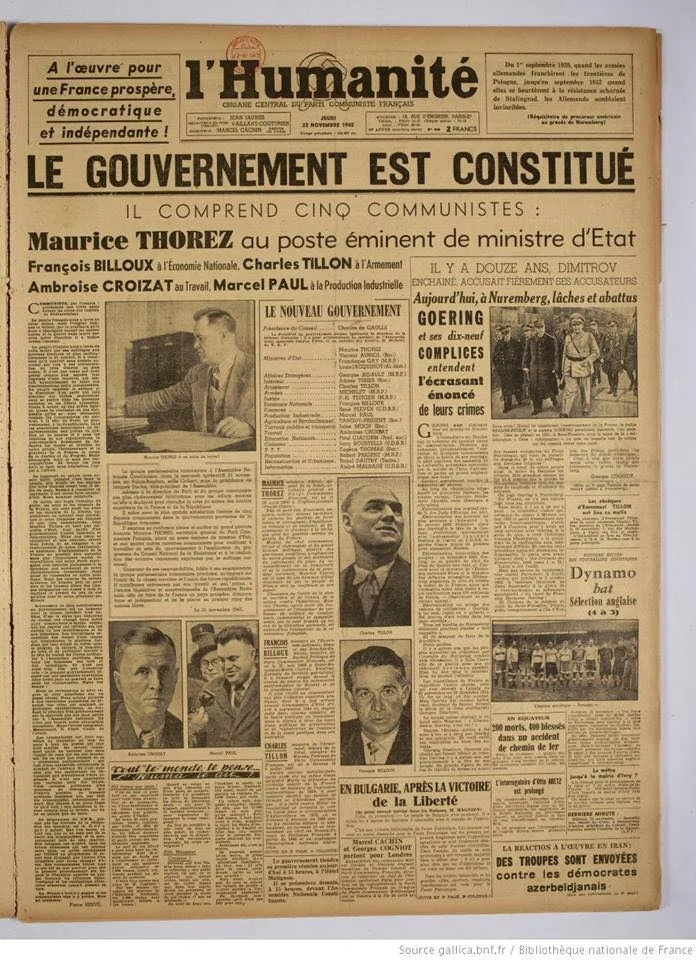

Revue de presse
« Le gouvernement est constitué ». Cinq ministres communistes à la une en 1945
Date indiquée par Facebook · 12 février 2018
Repères éditoriaux
Nous avons partagé une reproduction de la une de L’Humanité du 22 novembre 1945, créditée à Gallica et à la Bibliothèque nationale de France. Le journal annonce cinq ministres communistes et nomme Maurice Thorez, François Billoux, Charles Tillon, Ambroise Croizat et Marcel Paul.

Sources
Archive rouge · document diffusé sur Facebook · AR-0002-FB-02118
À lire aussi · Un exemplaire de L’Humanité adressé à Jacqueline Picasso